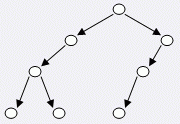

一棵二叉树可以按照如下规则表示成一个由 $0$、$1$、$2$ 组成的字符序列，我们称之为“二叉树序列 $S$”：
$S=\begin{cases} 0 & 表示该树没有子节点 \\ 1S_1 & 表示该树有一个子节点，S_1为其子树的二叉树序列 \\ 2S_1S_2 & 表示该树有两个子节点，S_1和S_2分别表示其两个子树的二叉树序列 \end{cases}$
例如，下图所表示的二叉树可以用二叉树序列 $S=21200110$ 来表示。

你的任务是要对一棵二叉树的节点进行染色。每个节点可以被染成红色、绿色或蓝色。并且，一个节点与其子节点的颜色必须不同，如果该节点有两个子节点，那么这两个子节点的颜色也必须不相同。给定一棵二叉树的二叉树序列，请求出这棵树中最多和最少有多少个点能够被染成绿色。
 Comet OJ
Comet OJ